本系列文章是以林沛群老师在coursera上的课程机器人学一为参考，进行归纳整理。
引言
上一讲中我们介绍了一种用三次多项式的方式来规划轨迹曲线的方式，但是在很多实际任务中我们需要用到直线轨迹。但是如果单纯的使用直线轨迹，那么在两段之间的中间点处速度是不连续的，为了解决这个问题，我们把直线两端修改为二次方程式，从而让速度变得平滑，如下图：
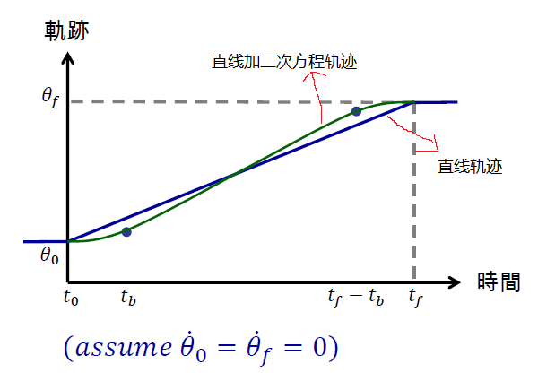
规划方式
规划的方式分为两段，直线段和二次多项式段：
- Linear段，是匀速的：
$$
\dot \theta=\frac{\theta_h-\theta_b}{t_h-t_b}=\dot \theta_{t_b}
$$ - Parabolic段，是等加速的：
$$
\begin{aligned}
&\theta(t)=\theta_0+\dot \theta_0t+\frac{1}{2}\color{red}{\ddot \theta}t^2 （这个是等加速度的位移公式）\\
&\dot \theta(t)=\dot \theta_0+\color{red}{\ddot \theta}t \\
&\dot \theta(t_b)=\color{red}{\ddot \theta}t_b（assume \space \dot \theta_0=0） \\
\end{aligned}
$$
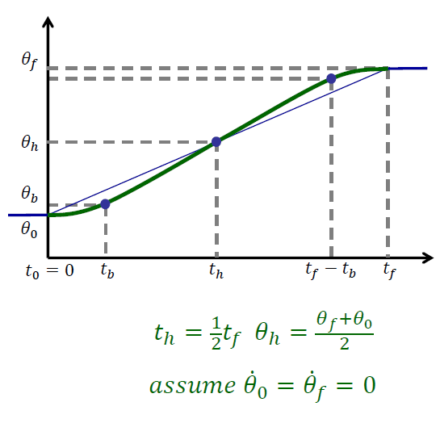
因为直线段和二次多项式段的交界处的速度需要一样，所以可以得到如下结论：
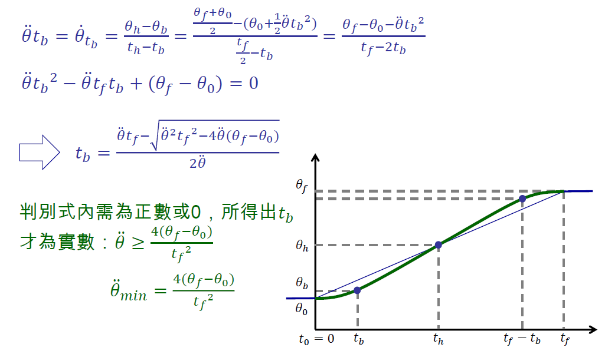
对加速度$\ddot \theta$的讨论
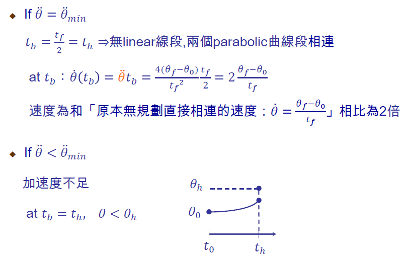
三种方式的比较
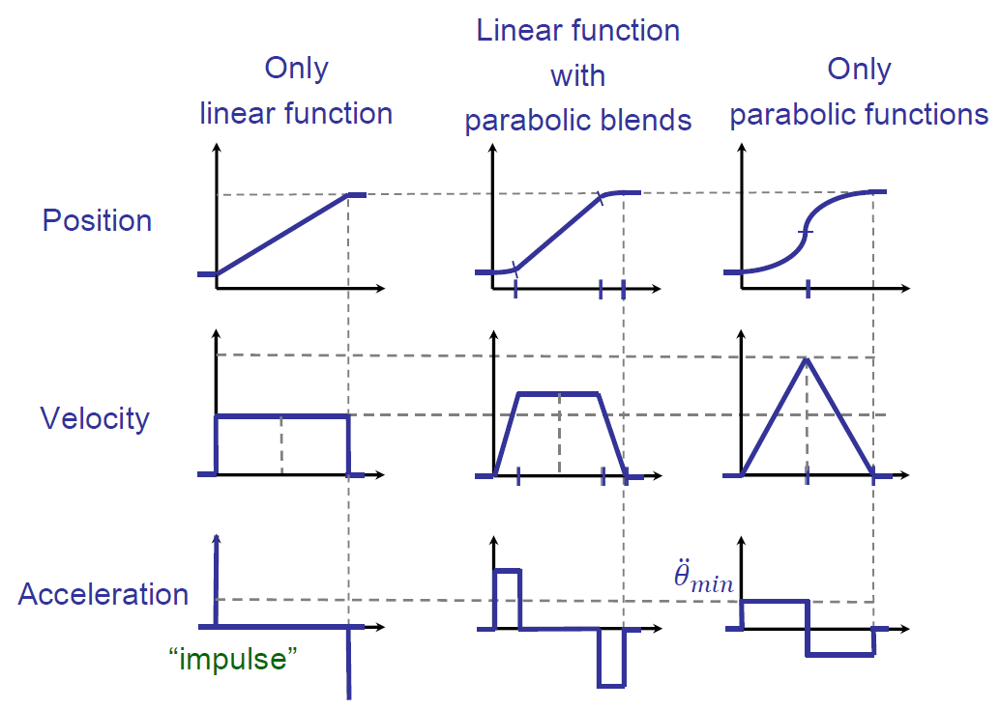
多段Linear Function with Parabolic Blends
假设，有一个路径规划，其中有n个中间点，然后用Linear Function with Parabolic Blends的方法将各个点串起来，但是实际的轨迹并没有经过中间点（黑色实线），如下图所示：
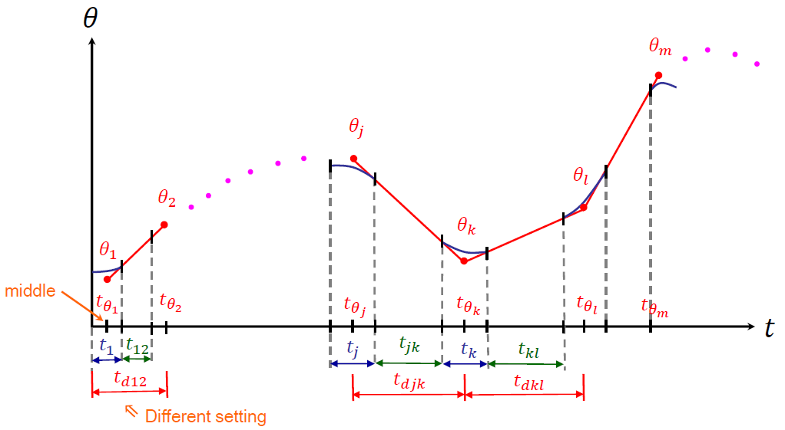
- 轨迹中间线段$[\theta_i \space \theta_{i+1}]$的计算方式：
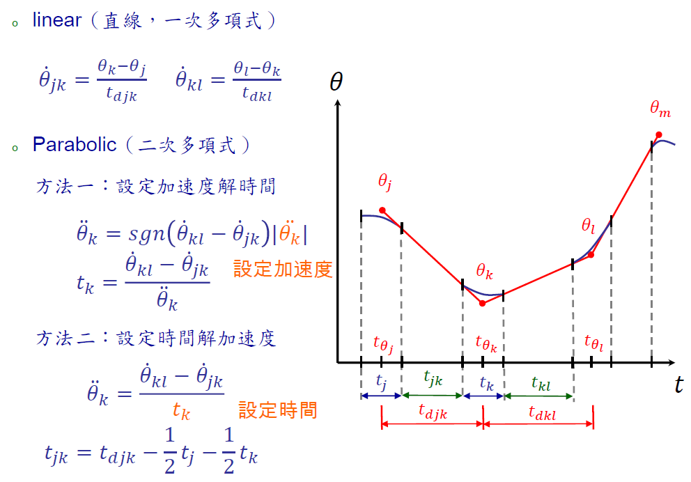 - 轨迹第一段的计算方法：
前面我们说过实际的轨迹并没有经过中间点，但是起始位置是必须要经过的，所以我们不能用计算中间线段的方式来计算起始点。这里假设起始位置速度为0，然后我们可以在$\theta_0$的后面插入一个假设的中间点$\theta_1$，并且它的位置是二次多项式所需时间$t_1$的一半（$t_{\theta_1}=\frac{1}{2}t_1$）。然后用以下方式计算：
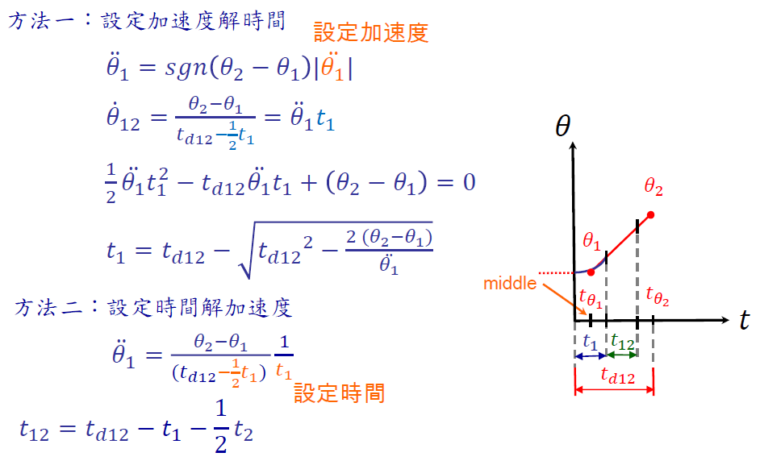 - 轨迹最后一段的计算方法：
最后一段和第一段一样，假设最后速度为0，在$\theta_f$点前插入一个假设的中间点$\theta_n$，并且它的位置是二次多项式所需时间$t_n$的一半（$t_{\theta_n}=\frac{1}{2}t_n$）。然后用以下方式计算：
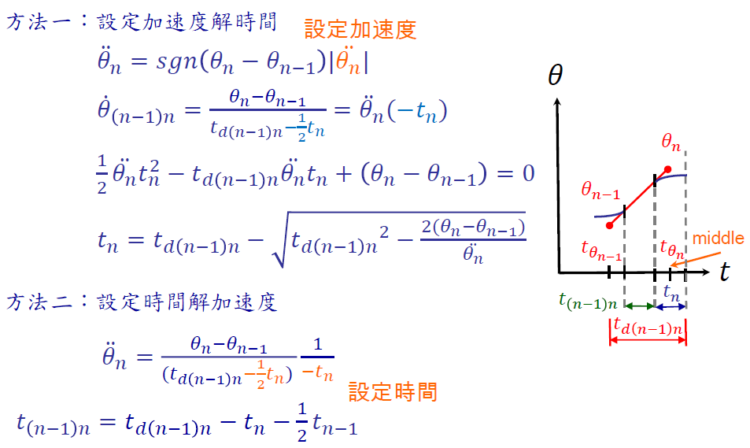
举例：一个RRR手臂
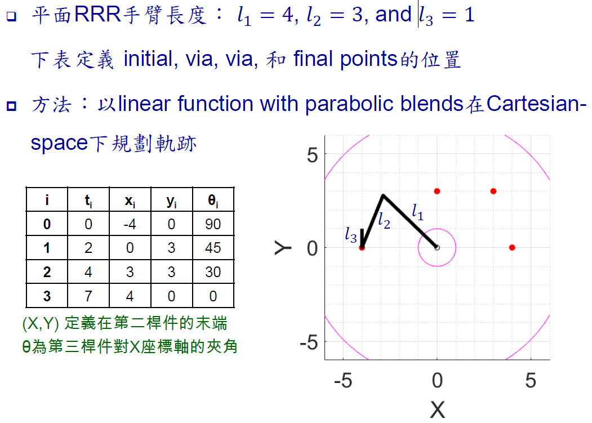
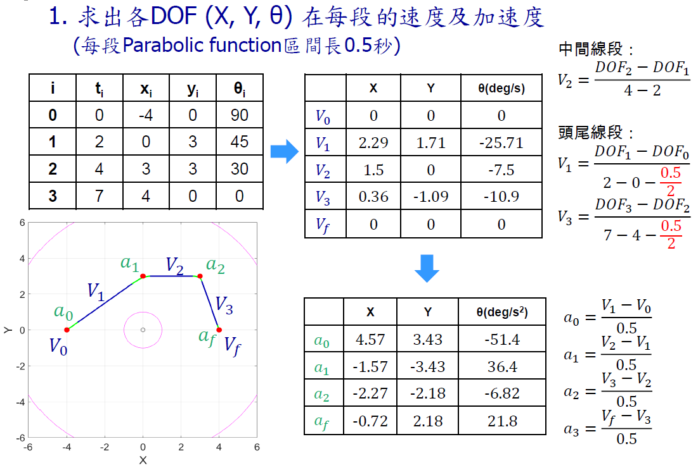
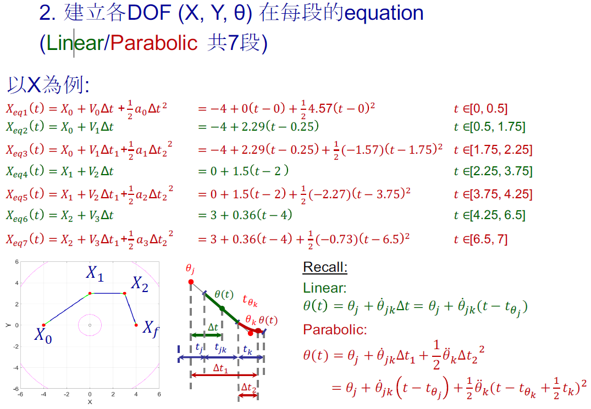
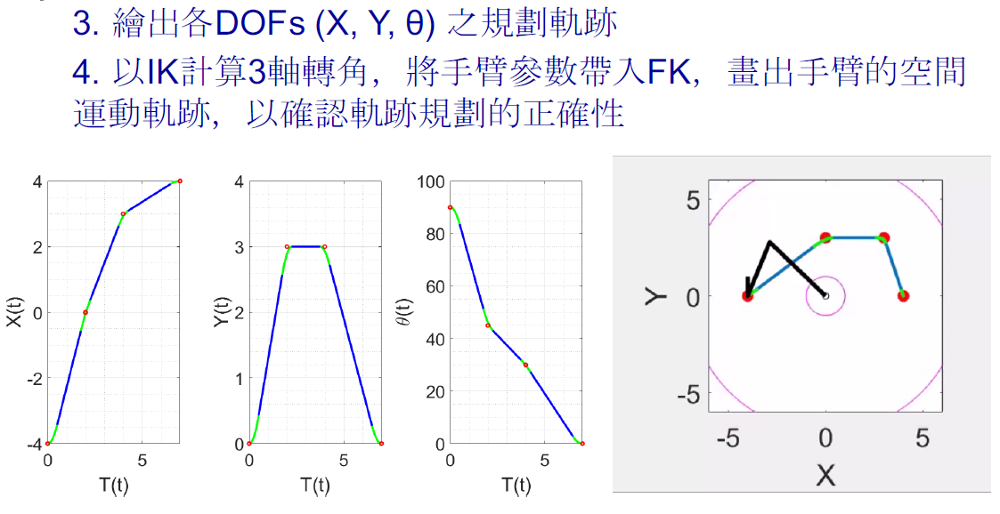
多段Linear Function with Parabolic Blends的讨论
- 在真实系统中可以达到的加速度$\ddot \theta$取决于很多因素：
- 电机的规格
- 手臂的姿态：手臂在不同状态下，各个joint所需要承受的torque不同。
- 手臂的动作状态：手臂在不同运行状态下，各个joint所需要承受的惯性力不同。
- 路径规划没有通过中间点的解决方法：在原本的via points两边插入pseudo via points（橘色的点），让原本的via points落在linear段上，这样就会通过，如下图：
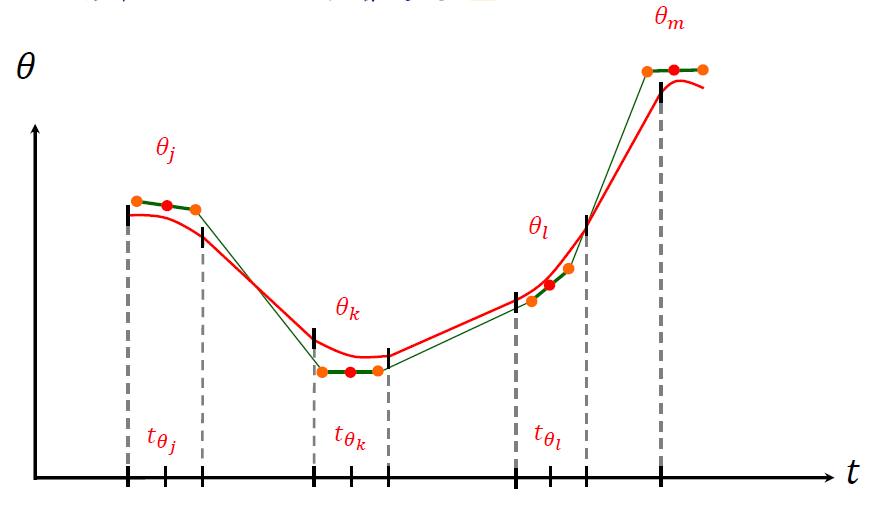